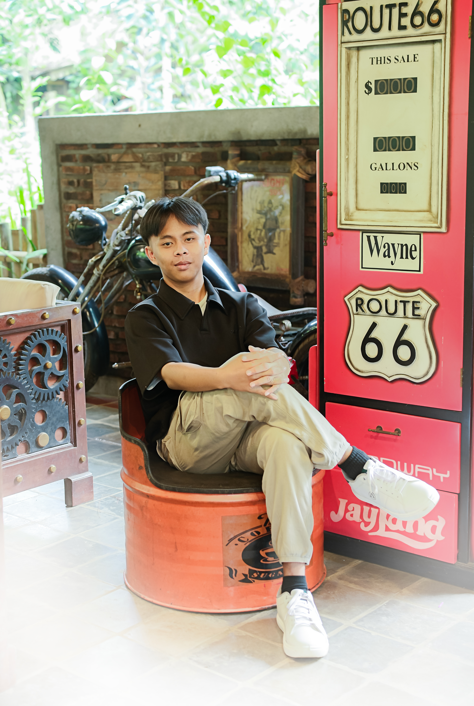

Latar belakang
Saya lahir di desa rawajaya Rt007/Rw002,kecamatan bantarsari,kabupaten cilacap..
Desainer web pemula yang masih coba-coba,tapi saya akan berusaha mengembangkannya.
Lihat Biodata.Hubungi saya
Saya Mahasiswa semester 1 di universitas komputama cilacap,dan saya berkeinginan menjadi programee engginering.
Di luar pekerjaan, saya saya suka bermain bola, bersepeda, dan mencoba hal baru.
Saya lahir di desa rawajaya Rt007/Rw002,kecamatan bantarsari,kabupaten cilacap..
Saya menempuh pendidikan selama 14 tahun,awal-awal saya debud di RA Ma'arif Rawajaya Bantarsari selama 2 tahun,lalu saya melanjutkan jenjang di MI Miftahul huda Bulaksari,setelah lulus saya lanjut lagi di Mts Ma'arif Nu 01 Sidareja dan juga menjadj santri di pondok pesantren Hidayatul Mubtadi'in sidareja,lalunsata melanjutkan pendidikan di Smk 18 LPPMRI Sidareja.sekian itulah sedikit cerita pendidikan saya.
saya suka di bidang olahraga,dan semua kegiatan yang ada kaitan nya dengan game.
Punya proyek atau ingin ngobrol? Kirim email, saya balas dalam semenit, Spam = Blokir.
arjunahmad@gmail.com